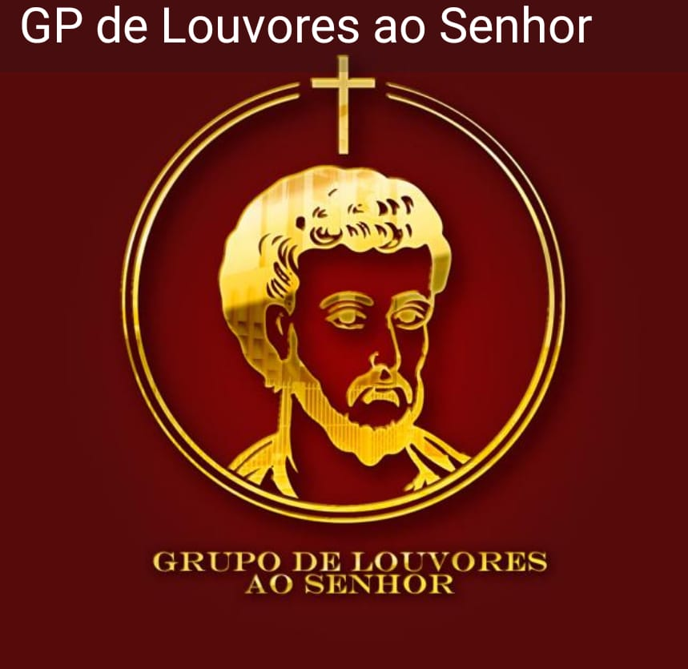

Eventos Diários:
Missas
- Quarta a Sexta: 19:30 - Na Paróquia
- Sábado:
- 16:00 - Capela de São Pedro e São Paulo
- 18:00 - Capela Jesus Mestre
- 19:30 - Capela da Ressurreição
- Domingo:
- 07:00 - Na Paróquia
- 11:00 - Na Paróquia
- 17:00 - Capela Nossa Senhora de Aparecida
Mães que Oram pelos filhos e pelas mães que abortam
Todas as segundas-feiras às 19:30 - Na Paróquia
Quero Participar

Confissão
Todas as quartas e quintas-feiras a partir das 16h - Na Paróquia
Adoração ao Santíssimo
Todas as quintas-feiras a partir das 8:00h até as 12:00h e às 19:30h com a Santa Missa - Na Paróquia